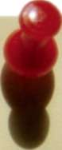
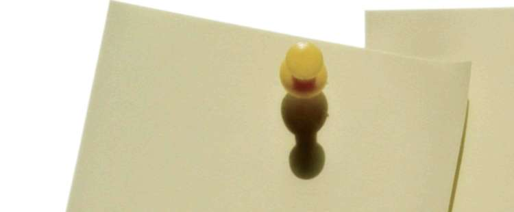

Çağdaş ceza yargılama sisteminde suçun ispatı her türlü delil vasıtasıyla yapılmaktadır. Hukukun adil bir şekilde gerçekleşmesi, gerçek suç faillerinin
ortaya çıkartılması için soruşturmanın düzgün yapılmasına bağlıdır.
Bu zamana kadar anlatılan bilgiler ışığında cinayet suçu soruşturma tekniklerinin aslında çizilebilir net kurallarının bulunmadığı gözlemlenmiştir.
Yapılacak eğitimlerle birlikte cinayet olayları meydana geldiğinde soruştur-
macının neler yapması gerektiğini öğretmek amaçlanmıştır.
KAYNAKÇA
1. EGM Asayiş Dairesi Başkanlığı Kuruluş, Görev ve Çalışma Yönetmeliği 2. EGM İl/İlçe Emniyet Müdürlükleri/Amirlikleri Asayiş Şube Müdürlüğü/
Büro Amirliği Kuruluş, Görev ve Çalışma Yönetmeliği 3. Modern Soruşturma Teknikleri (A.Turhan ŞENEL) 4. Asayiş Dairesi Başkanlığınca 2001-2005 yılları arasında yapılan çalışmalar.
5. Cinayet Olayları Soruşturma Teknikleri 2006 (EGM Yayın No:411) 6. 5237 Sayılı Türk Ceza Kanunu
7. 5271 Sayılı Ceza Muhakemesi Kanunu
8. İfade Almada Standartların Belirlenmesi için Görüş ve Tavsiyeler Kılavuzu. “AB Eşleştirme Projesi TR02-JH-01 ”
9. Cinayetin Şifreleri (Mustafa KAYGISIZ ve Hanefi SEVER) 10. Olay Yeri İnceleme Temel Eğitim Kitabı 11. Kolluk Uygulamaları Açısından Adli Tıp (Uzm.Dr. M.Süalp BENGİDAL) 81


E
EKLER
EK - 1: KURS SONU SINAV SORULARI
EK - 2: İFADE ALMADA PERFORMANS
KRİTERLERİ VE GÖZLEMLEME
EK - 3: ÖRNEK OLAYLAR VE GRUP ÇALIŞMALARI
EK - 4: ÖRNEK OLAYLAR VE SENARYOLAR
EK - 5: KURS PROGRAMI DEĞERLENDİRME
ÖLÇEĞİ
: PROGRAMIN HAZIRLANNASINA VE
UYGULANMASINA İLİŞKİN GÖRÜŞLER
EK - 7: YASAL DÜZENLEMELER
EK - 8: EĞİTİCİ PERSONELİN
DEĞERLENDİRİLMESİ


EKLER
KURS SONU SINAV SORULARI
1. Aşağıdakilelerden hangisi olay yerinde yapılacak ilk işlerden değildir?
a) Mağdurun yaşayıp yaşamadığına bakılır
^
b) Suçu ihbar eden kişinin kimliğini tespit edilir c) Suç yerini muhafaza altına alınır ve derhal amirlere haber verilir d) Olay yerine Cumhuriyet savcısı gelene kadar beklenir 2. Aşağıdakilelerden hangisi olay yerinde yapılacak işlerdendir ?
a) Suçun ilk öğrenildiği saat tespit edilir b) İlk olay yerine gelen ekibin olay mahalline geliş saati tespit edilir c) Olay tanıkları tespit edilir
d) Hepsi
3. Aşağıdakilelerden hangisi ölümü tespit edebilmenin basit ve pratik yollarındandır?
a) Tırnak rengi ve kızarıklığının olmayışı b) Göz bebeklerinin ışığa karşı reaksiyonunun olması c) Göz bebeklerinde hareketli bakış
d) Hepsi
4. Aşağıdakilelerden hangisi ölümün kolay tespit edilemeyeceği durumlardan değildir?
a) Elektrik şokları
b) İlaç zehirlenmeleri
c) Derin uyku hali
d) Hepsi
5. Aşağıdakilelerden hangisi olay yerinde yapılması gereken işlerden değildir?
a) İçeriye girenler gayet dikkatli ve itinalı hareketle en ufak teferruatı dahi gözden kaçırmamalıdır
b) Şüphelinin giriş ve çıkış yolunu tespit etmeli, içeride na sıl davranmış olduğunu kestirmeye çalışmalıdır
c) Cumhuriyet savcısı gelmeden olayı hemen çözmek için olay yeri incelenmeye başlanır.
d) Dış çevre tetkik edilmelidir
6. Aşağıdakilelerden hangisi delil olarak kabul edilir?
a) Olay yerinde bulunan silah
b) Olay yerinde bulunan ruj
c) Olay yerinde bulunan şapka
d) Hepsi